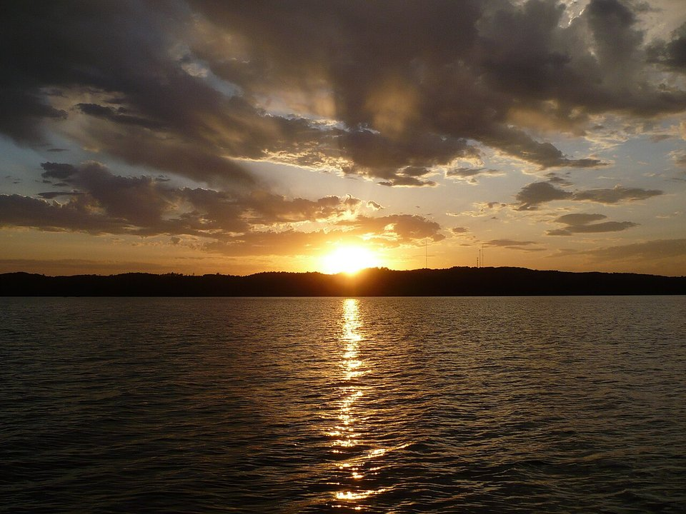

Gull Lake · Resort
Madden’s on Gull Lake
A large family resort with golf, a marina and several restaurants.
Official details for Madden’s on Gull LakeClassic Minnesota lake resorts.
The Brainerd Lakes area has more than 400 lakes and a century of family resort history. Land at Brainerd Lakes Regional, stay at a classic resort on Gull Lake such as Madden’s, Cragun’s or Grand View Lodge, play some of Minnesota’s best golf, take the boat out, ride the Paul Bunyan Trail or the red-dirt mountain-bike trails at Cuyuna, and end the day at a supper club.

Time illustration: direct distance at 150 KTAS plus 15 minutes for departure and arrival, matching the discovery page. Use ForeFlight for your actual flight plan.
Check the weekend weather at both ends → Flight category, your minimums and the crosswind on the best runway.
KBRD, Brainerd Lakes Regional, is a non-towered airport at 1,232 feet with runways of 6,512 and 7,100 feet, about 20 minutes from the Gull Lake resorts.
Brainerd Lakes Regional Airport, Brainerd, MN
Ask your resort about airport pickup; otherwise arrange a rental car. Summer weekends are busy with lake traffic. No live fuel price is shown.
Midwest flying: spring and summer thunderstorm lines, summer haze, gusty winds, river-valley fog on calm mornings, and winter icing. About 1030 nm from Myrtle Beach: a long cross-country day with two fuel stops. Plan four or more nights, or break the trip with an overnight on the way.
Rates and availability need travel dates. Summer weekends book well ahead.
A large family resort with golf, a marina and several restaurants.
Official details for Madden’s on Gull LakeA lakeside resort with golf and a beach.
Official details for Cragun’s Resort on Gull LakeA 1919 log lodge on Gull Lake with golf and a spa.
Official details for Grand View LodgeResorts and cabins on the lakes.
Explore Brainerd Lakes for More places to stayPrices and availability for your dates, through our partner Stay22. This is an affiliate link: we may earn a commission at no cost to you. The picks above are never paid.
Reserve weekend dinners.
Several restaurants on the Madden’s grounds.
Official details for Dining at Madden’sA classic lakeside supper club on Gull Lake.
Official details for Bar Harbor Supper ClubA Gull Lake restaurant and bar since 1917, with docks for boaters.
Official details for Ernie’s on GullWood-fired dishes and a lively bar in Baxter.
OpenTable for Prairie BayA local pizza chain in Brainerd, Nisswa and nearby towns.
Official details for Rafferty’s PizzaSupper clubs and lake restaurants.
Explore Brainerd Lakes for More restaurantsLake season runs from Memorial Day to Labor Day.
This prototype links to the local visitor site. It does not yet match events to your travel dates.
Boating and swimming.
Explore Brainerd Lakes for Lake seasonColor around the lakes.
Explore Brainerd Lakes for Fall colorIce fishing and snow trails.
Explore Brainerd Lakes for Ice seasonCheck the local calendar when choosing a weekend, and confirm dates and tickets with the organizer.
A sample lake-resort weekend. This is a long flight; plan four or more nights. No bookings or availability confirmed.
Land at KBRD mid-morning.
Lunch at a Gull Lake resort.
A short walk, then back to the airport.
Land at KBRD, subject to weather and your actual flight plan.
Settle in and get on the lake.
Dinner at the resort.
Golf or the Paul Bunyan Trail.
Boat or beach.
Dinner at Prairie Bay.
Cuyuna trails or a lake walk.
Allow time at the FBO before departure.
Afternoon thunderstorms are common in summer; leave in the morning.
A morning on Gull Lake.
Explore.
Dinner in town.
These details make the difference between an appealing list and a usable getaway.
Resort, then tee times.
About 1,030 nm from Myrtle Beach: plan four or more nights.
Most resort activities run May to September.
June to September.
Picks and links reviewed by WingAway Weekends. Hours, prices, menus and availability change often, so confirm directly with each place before booking. Spotted something out of date, or have a favorite we missed? Email us at hello@wingawayweekends.com.
WingAway Weekends helps you discover the destination. Use ForeFlight and current official aviation information for route, performance, weather, NOTAMs and preflight decisions. Flight planning and PIC responsibility stay with the pilot.